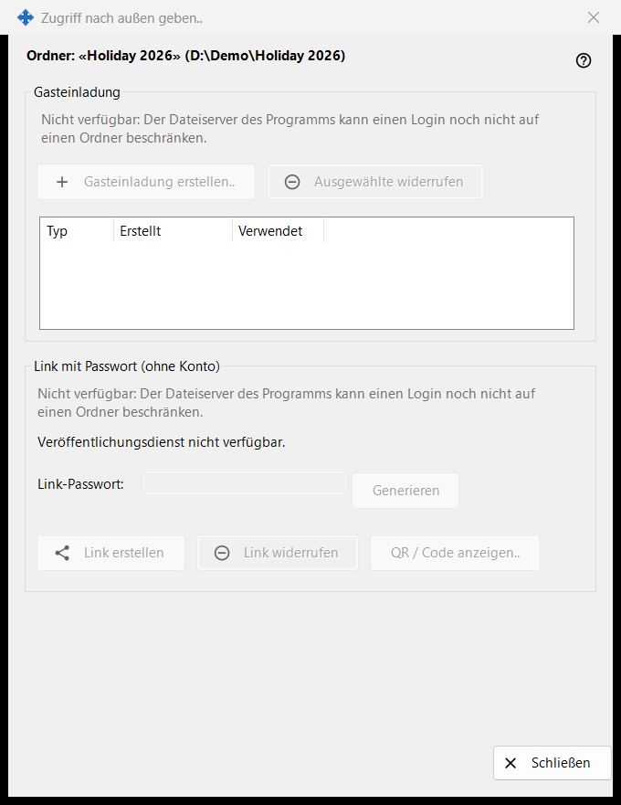
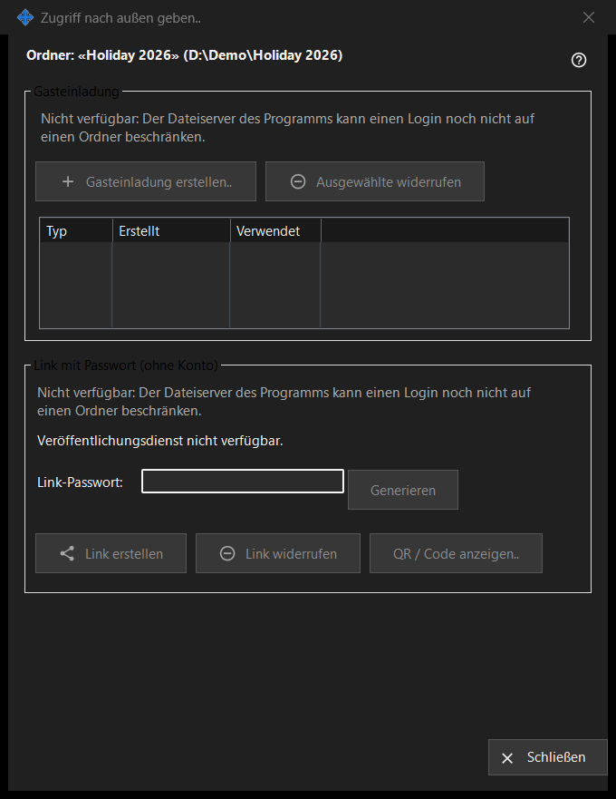

Zugriff nach außen geben
Verwendungszweck
Steuert den Zugriff auf einen freigegebenen Ordner für Personen außerhalb Ihrer eigenen Geräte: eine Gasteinladung oder einen Link mit Passwort, der kein Konto braucht. Das Fenster öffnet sich über die Schaltfläche «Zugriff nach außen geben..» im Hauptfenster von Share Manager für den gewählten Ordner. In dieser Version sind die Steuerelemente, die neuen Zugriff erstellen, ausgeschaltet, und das Fenster nennt den Grund; bestehender Zugriff kann weiterhin widerrufen werden.


In dieser Reihenfolge
- Lesen Sie die Kopfzeile mit Ordnername und Pfad.
- Lesen Sie in jeder Gruppe die Begründungszeile; solange sie angezeigt wird, kann nichts Neues erstellt werden.
- Zum Entfernen von Zugriff wählen Sie eine Einladung und klicken auf «Ausgewählte widerrufen» oder auf «Link widerrufen».
- Klicken Sie auf «Schließen» (Escape), um das Fenster zu verlassen.
Die Elemente
Ordner und Status
Die fette Zeile nennt den Ordner und seinen Pfad. Die Statuszeile unten meldet das letzte Ergebnis. Läuft der Veröffentlichungsdienst nicht, zeigt das Fenster «Veröffentlichungsdienst nicht verfügbar.», und seine Schaltflächen sind ausgeschaltet.
Gasteinladung
Die Gruppe hat «Gasteinladung erstellen..», «Ausgewählte widerrufen» und eine Liste mit Typ, Erstellt und Verwendet für die Gasteinladungen dieses Ordners. Das Widerrufen entfernt die Einladung; der Ordner und seine Dateien werden nicht gelöscht.
Link mit Passwort (ohne Konto)
Der Status lautet «Link nicht erstellt.» oder «Link ist aktiv.» Das Feld «Link-Passwort:» ist maskiert, und «Generieren» füllt es. «Link erstellen» wird zu «Link aktualisieren», solange ein Link aktiv ist. «Link widerrufen» fragt zuerst, weil jede aktive Sitzung über den Link endet. «QR / Code anzeigen..» zeigt den Link als Code.
Warum das Erstellen aus ist
Jede Gruppe zeigt eine Begründungszeile, dass der Dateiserver des Programms eine Anmeldung nicht auf einen Ordner beschränken kann. Solange sie angezeigt wird, sind alle Steuerelemente deaktiviert, die Einladungen oder Links erstellen. Das Widerrufen bestehenden Zugriffs hängt nur davon ab, was vorhanden ist.
Managereinstellungen · SFTP-Freigabeeinstellungen · Einstellungen des Austauschservers